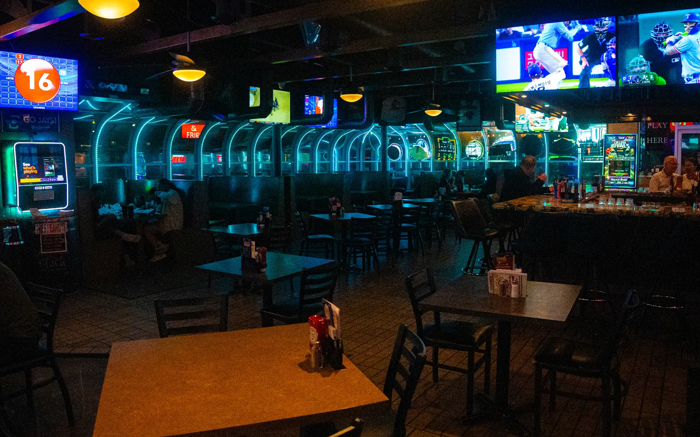

About Jerzes
Jerzes Sports Bar, Grill & Keno opened in the summer of 2010. Since that time it has grown from a humble, local haunt into one of the finest sports bars the Omaha metro area has to offer.
Maintaining its promise of above-standard cuisine, Jerzes has perfected the art of bar food into what the Omaha World-Herald referred to as "a menu on steroids."
Every game. Every corner.
It takes more than great food to be a great sports bar. Add to the atmosphere the deluge of light and live Las Vegas-style keno as you are surrounded by more than 70 high-definition big-screen televisions. There isn't a bad seat in the house.
Jerzes carries the major DirecTV packages — professional and collegiate — with 10 receivers, so you get any game, anytime. The action can be seen from every corner of the oversized dens.

Illusion's Lounge
Step into Illusion's Smoking Lounge, the only one of its kind in the state of Nebraska — an atmosphere where you are allowed to smoke while still enjoying 72-degree weather all year round.
For a quiet moment, enjoy the relaxing waterfall patio. When a big game isn't on, Jerzes doubles as a comfortable neighborhood bar, with a state-of-the-art Bose sound system and a digital jukebox with access to over a quarter of a million songs.

Play where the payouts are.
Live keno, where you can win up to $50,000 in cash. Leather keno chairs, darts, video games, and a staff that prides itself on prompt, friendly, indulgent service.
Players Keno sits adjacent to the sports bar with the newest equipment, over 20 large HD keno screens, four comfortable lounge areas, and some of the best payouts in the entire Omaha metro. Must be 19 to play.

"A menu on steroids."
Omaha World-Herald
Jerzes offers over twenty local and international beers on tap and dozens more by the bottle. A full liquor and wine selection completes the list.